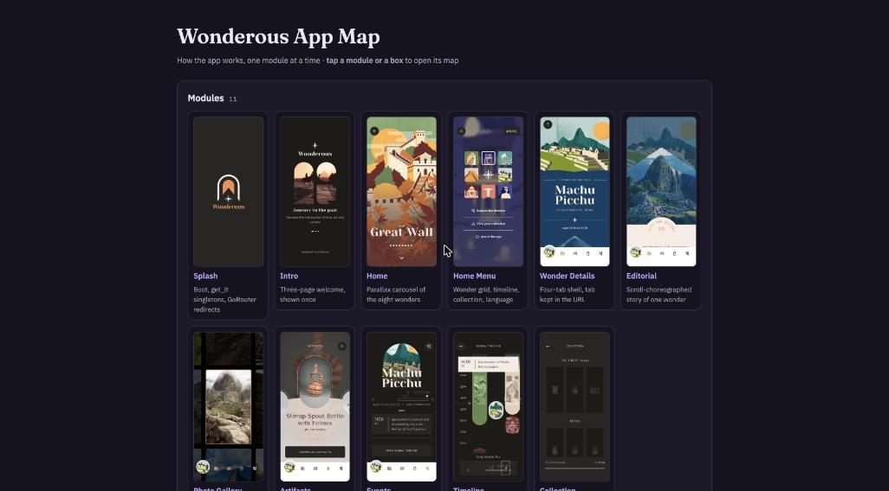
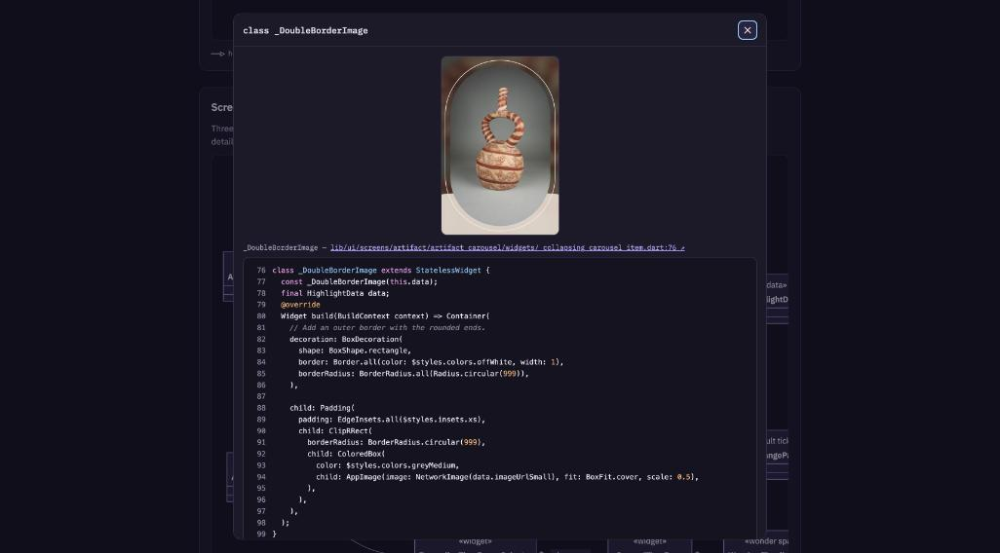

AI agent skill · for mobile apps
App Map
Ask your AI coding agent to map your app: UML you can click down to the code.
Claude Code · Cursor · Codex
Gemini CLI · Copilot
Gemini CLI · Copilot
Ask your AI coding agent to map your app: UML you can click down to the code.

